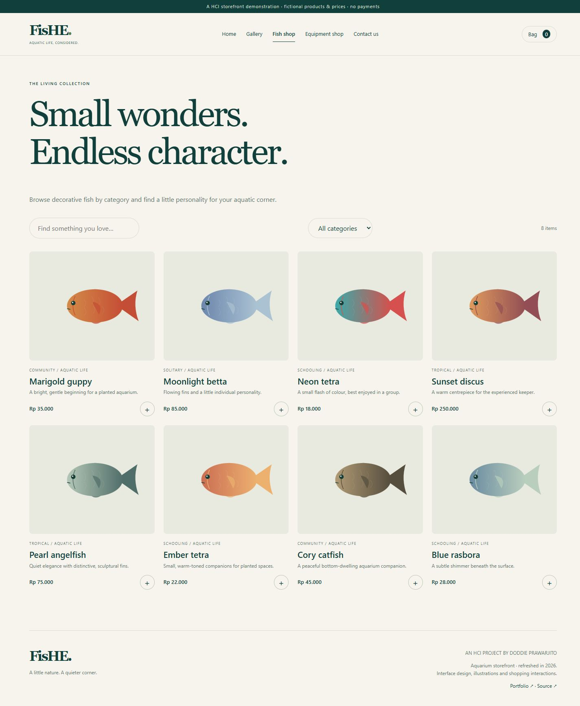
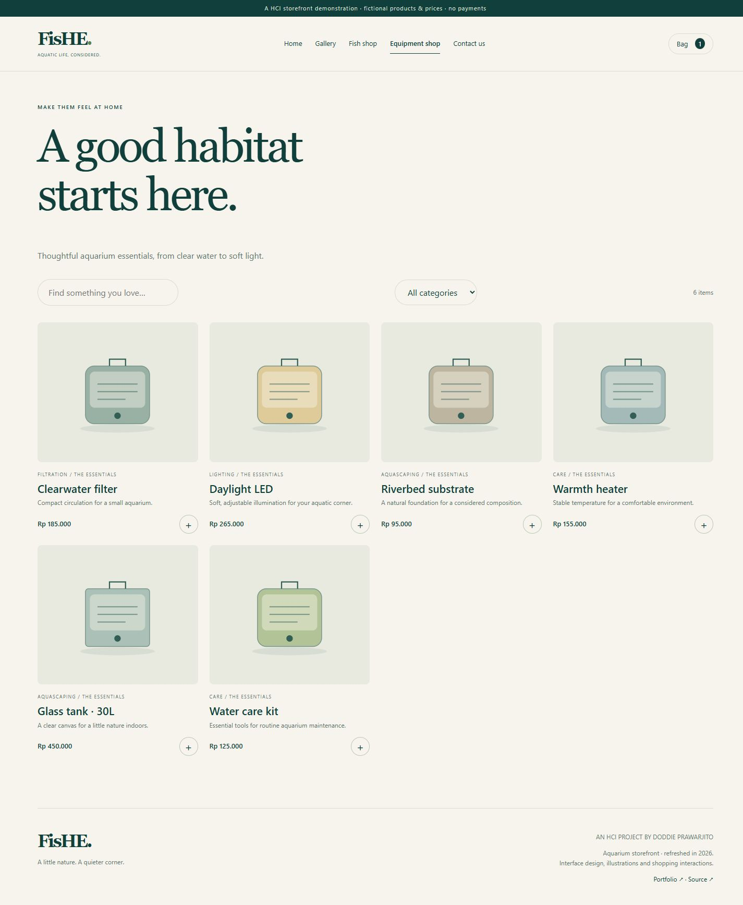
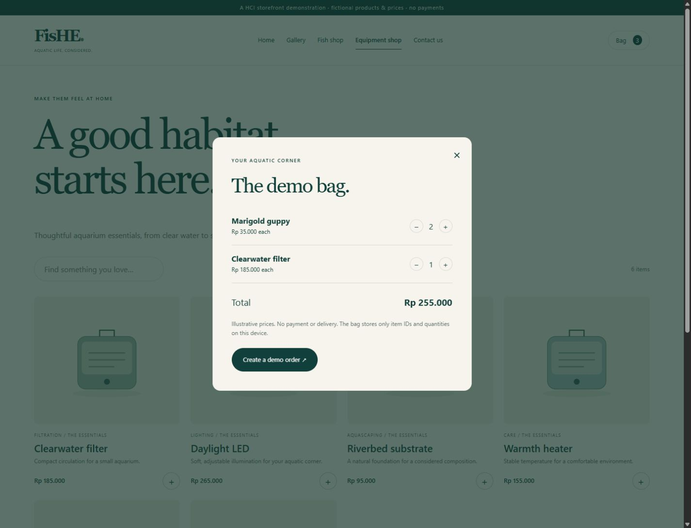
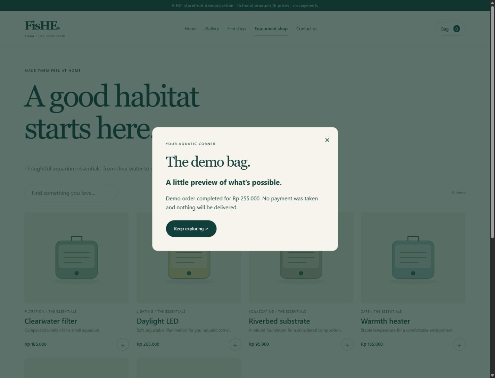
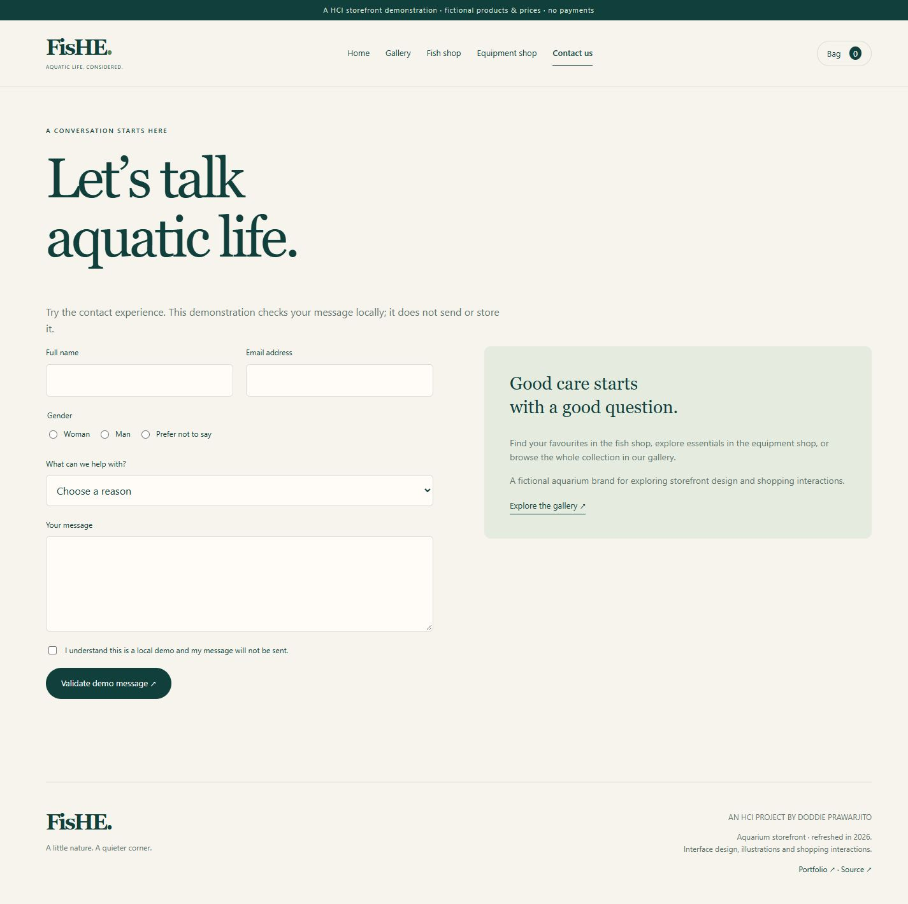

FisHE.
An aquarium storefront with a calm visual identity and an interactive shopping bag.
The idea
FisHE brings fish, aquascaping and equipment into one browsing experience. Its five-page frontend uses an aquatic palette and custom illustrations, with a refreshed implementation completed in 2026.
What I built
Home and gallery; categorized fish and equipment; live search; a persistent demo bag with quantity controls and totals; local contact validation; responsive layouts; keyboard controls, a pausable jQuery slider and new SVG illustrations.
Static checks and desktop/mobile browser checks passed. Verified combined category/search filtering, quantity totals, bag persistence after reload, simulated order completion, and invalid/valid contact states. Products, prices and orders are illustrative. No payment or email backend is implied.
Explore the features





